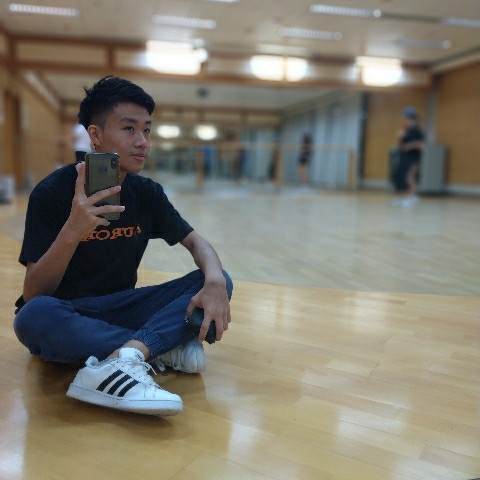

Hi, I'm Tommy
Imma 21 years old outgoing boy from Taiwan, currently living in Hong Kong majoring in Computer Science at Hong Kong Polytechnic University


You might not know where Taiwan is...
Well, it's a country in East Asia, with a population of 23+ million, Taiwan is an island surrounded by sea. The island has many different views, food, and natural landscapes. Taiwan is also famous for its fruits, known as the kingdom of fruits
Let's talk more about myself:
Though I'm an engineering student, I love cooking, singing and dancing. Might not be obvious but I do make good and tasty dishes! During the past three years, I've been a member of the dance team at my Uni. In terms of music, I played guitars and violins. My favorite singers include Taylor Swift, James Blunt, Ed Sheeran, Avicii, Jonas Blue...., just to name a few. Music is very important to me, in addition to being a reflection of my mood, it is also a symbol of memory.
In my spare time, besides busy dealing with my studies, I also like to travel with my friends. I love making friends, we always do stupid things together, like eating hot pot in a raincoat, lying on the road in the middle of the night, etc. I mean.... why not? You only live once! I watch movies and Netflix a lot, whether it's sci-fi, action, or drama. Although I am usually crazy, I am very emotional, and I'm easily moved by music and movies.
My dream job is to work as a Software Enginner and....travel all around the world with my friends and fam. Life is really damn SHORT! Theres so much I wanna do. But right now, I'm suffering from homesick and still struggling with my studies, researches, and my internship. If you're hiring and currently looking at my personal webpage, plzzzzz contact me~. Love you so much!
After all dis, go check the Albums page for some of my FANTASTIC moments in my life. Or, if you're interested in my professional skills, take a look at my Resume, also in the sidebar.